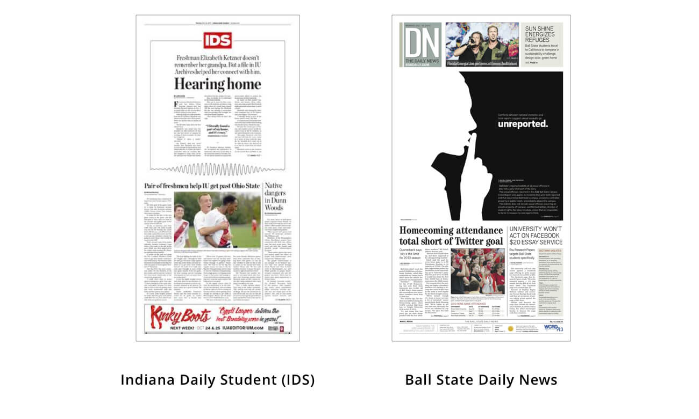
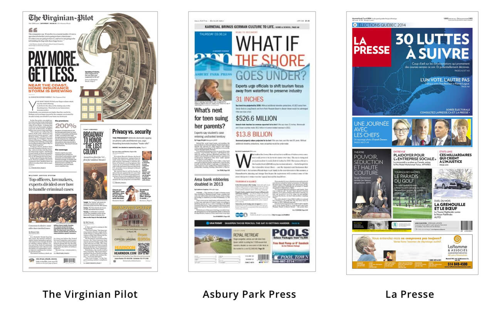
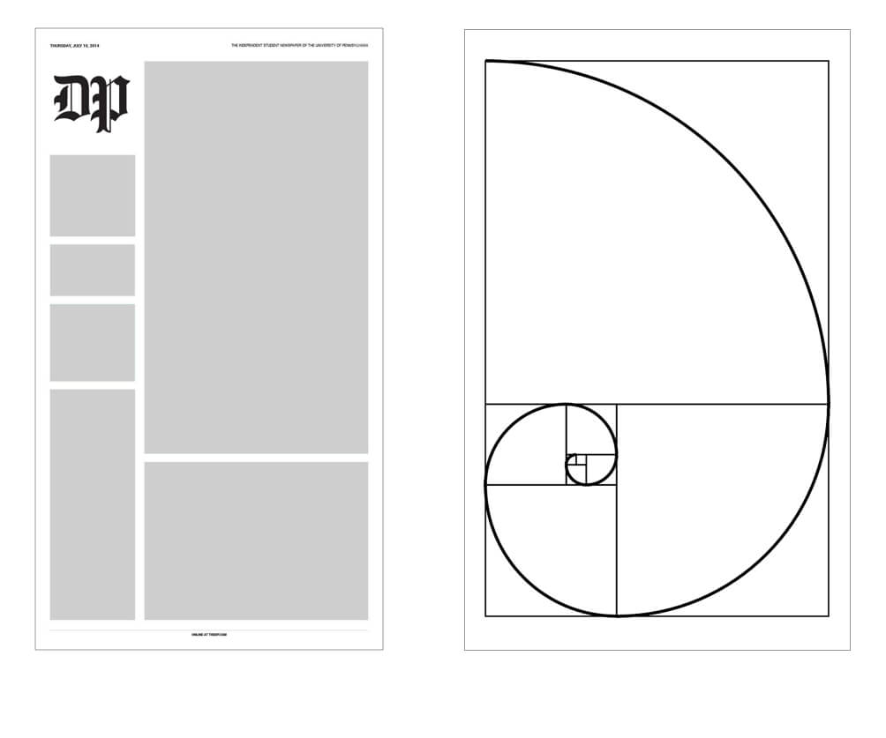
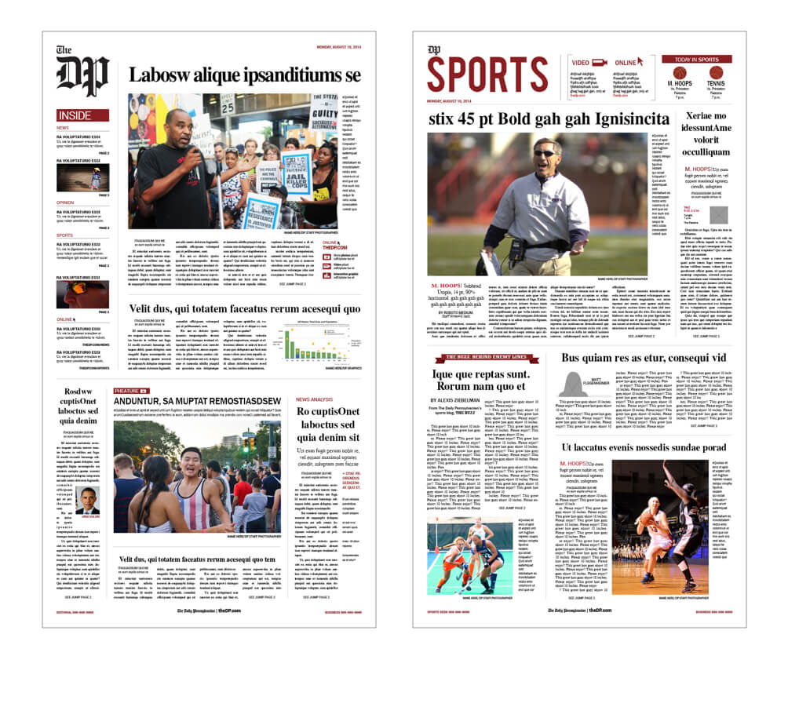
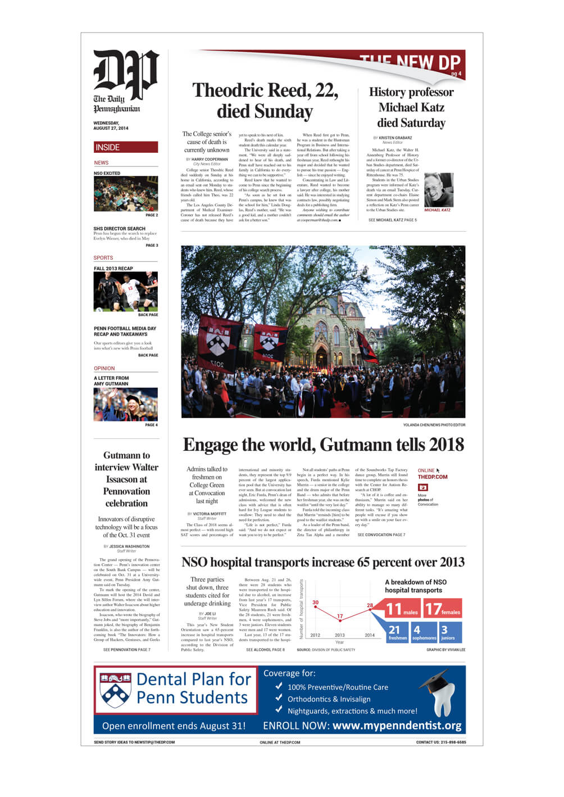
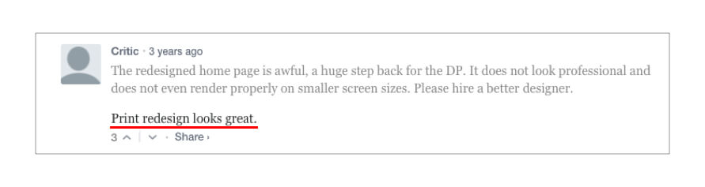
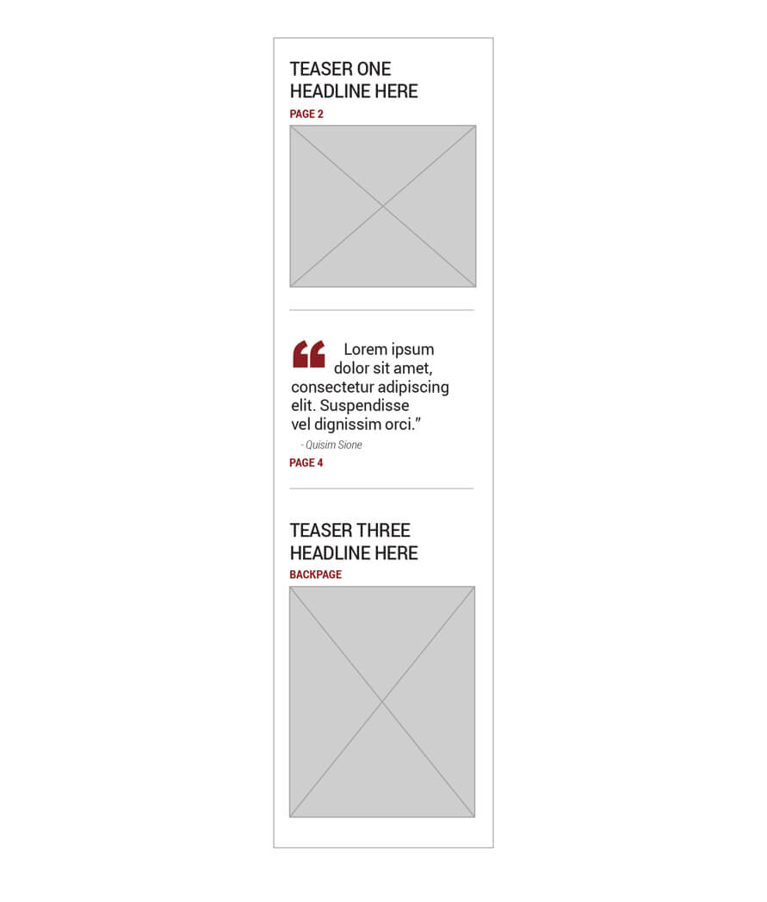
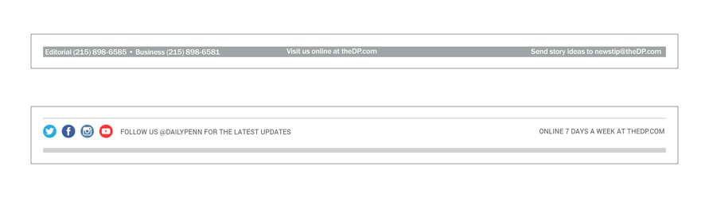
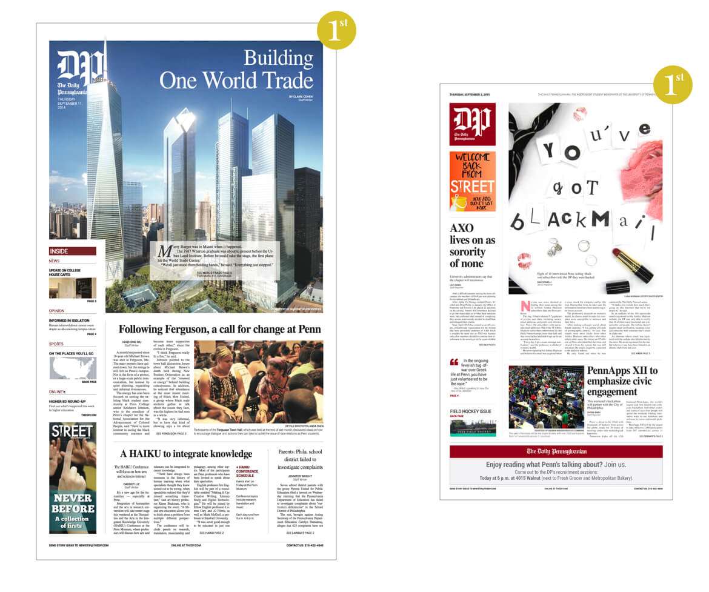

My Role: Lead Designer
The Daily Pennsylvanian (colloquially known as The DP) is the independent newspaper at the University of Pennsylvania. Founded in 1885, the main newspaper prints on a broadsheet with a range of 12-16 pages per issue, and was printed 4-5 days a week at the time. The DP also prints a weekly culture magazine, 34th Street Magazine, and an online satire blog, Under The Button.
During my time on the 130th Editorial Board in 2014, the company underwent a few major foundational changes to realign its outlook in a digital world. The Board of Directors—a mix of student editors and alumni industry professionals—decided it was pertinent for The DP to focus on its digital presence, an issue which was frankly widespread among journalism. One of the main projects in response to this move was redesigning the paper’s website, theDP.com, to look and function in an up-to-date manner.
As a Design Editor on the print side, I wanted to follow suit and also redesign the print paper to reflect the company’s paradigm shift. The paper looked like a traditional newspaper—it had a large horizontal flag in an classical typeface, serif fonts all around, a modular grid system, etc. My goal as lead designer for the redesign was to find a way to modernize the DP print version and create a more inviting experience to get more people to pick up the paper.
The redesign went through 2 formal iterations or phases: its initial launch in August 2014 when I was a News Design Editor, and a second iteration that launched in January 2015 when I was Creative Director that was based on my learnings from the first iteration. Minor iterations were made throughout after internal feedback as well.
One of the benefits of the DP was its alumni network. There were so many alumni that provided current students with industry tips, critiques, and suggestions on how we could improve our departments. One of these alumni was Chris George, who worked at The Washington Post as a Page Designer. He was probably one of the first to really inspire a redesign during a visit when he casually mentioned to us 3 Design Editors and our Creative Director that if we wanted to do a redesign we should focus on the several ideas that he had. I was perplexed at first when he mentioned a redesign—really, redesign a 130 year old institution(!)? However, when I looked through DP archives from the past decade, I did notice the front page design did indeed change.
The longer I kept designing the current front page in the original layout, the more I thought about redesigning the paper.
Fortunately, the idea of a redesign was well-received by the Managing Editor and President of the company at the time. The previous Design Editor tried to implement a redesign but had difficulty passing it through last year’s Editorial Board. However, with a new board in place, it looked like we were good to go.
Unknowingly, my research started at the beginning of the year when I started designing front pages for the paper. I would always look throughout the web for front page design inspirations on Pinterest (link to my pinterest board) or Google when tackling difficult front page designs. While browsing through inspiration for bolder designs, I developed a liking for a few papers that I thought really excelled in captivating their audience through design.
Student Publications
Both of these students publications deviated from the traditional newspaper layout and were, in my opinion, consistently well-designed. I saw Indiana Daily Student (IDS) a lot when researching best-designed college newspapers. They’re very clean, and almost minimalistic, but popping in the appropriate places. Ball State Daily News was also clean and diverse, and they had a cohesive design all throughout their issues.
Professional Publications
I also browsed through professional publications that produced more untraditional front pages to see what the pros were doing.
The Virginian Pilot really pushed the envelope with their centerpieces—the main focal design on the page. Their grid system was also very flexible to the point that the flag was moved around almost daily. Asbury Park Press and La Presse in Canada are also very visual-oriented and almost reminiscent of the card UI pattern with modular boxes comprised photos and a blurb of text. This execution on paper was very web-like.
I discovered that for these publications, the art really worked to make the paper stand out. My main takeaway was for the DP to have a prominent space on the front page for bold centerpieces that could attract readers and passerbys to pick up the paper.
Since I wanted to start implementing large, creative centerpieces, I took notes from the Golden Ratio to determine the optimal sizes of the other elements so as not to overpower the centerpiece. I used the Golden Ratio as inspiration to determine the proportions of the other modules and moved them around based on the hierarchy and elements of a newspaper.
The other main change in the redesign was the flag. I was intrigued with the idea of condensing the flag from a full-width rectangle to a square at the corner of the page to allow for more space on the front page. Initially I planned for the flag to be just the “DP” letters, which was essentially our branding online and on social media minus the red background. Visually, the letters were succinct and easy on the eye. I also figured that because readers on campus knew us as the “the DP” it was okay to embrace this.
However, this decision was met with opposition by those arguing that the words “Daily Pennsylvanian” always needed to be at the top of the front page. The issue was brought up as feedback after our redesign presentation to the Editorial Board. Frankly I was just surprised that every other part of our redesign was approved. In the second iteration, I suggested implementing a red background behind the letters for a cleaner look. (See 2nd Iteration section.)
Below are the first set of “wireframes” and layouts used to show how the redesign would look next to the current design. This was presented to the Editorial Board.
While us designers were ecstatic that our redesign idea went through (minus a few changes), our first issue with the print redesign debut was bittersweet. While we wanted to maximize the design to show that we were a brand organization with a new print design, website, and vision, we had to be conscious of the sensitive article at the top of page.
Nevertheless, we had a whole semester to become familiar and experiment with the design.
We got relatively pretty good feedback after the debut.
A comment on theDP.com on our President’s editorial announcing the “new” DP.
While unfortunately I do not remember looking into data on pick-up rates just to see how the redesign was performing (data exists for the second iteration), I had developed feedback of my own after designing the page for a few months. The main issue with this new layout was that I started to become frustrated that I couldn’t be as flexible with flag’s position. Feeling locked down with an irregularly-shaped space felt constricting.
When I was elected Creative Director in the Spring, I felt I had a bit more authority to make the changes that I wanted to see in the paper’s design. I had relatively the most familiarity with the print design at that point; therefore, I proposed to implement a few tweaks to the paper at the start of the semester to help my designers.
First and foremost, I was able to compromise on the flag and add the red background to emphasize its square shape and keep it feeling confined. However, I wasn’t able to remove the words “Daily Pennsylvanian” in small text which I thought would make it much cleaner.
The teasers were also redesigned to be more simple. In its second iteration, each teaser was composed of a short two line blurb and a photo, taking cue from online news UI and the social media feed. Opinion teasers changed from being one line headline with an accompanying blurb, to a quote with a large quote mark to visually draw in the eye. Opinion pieces did not usually have any art besides headshots and quotes tend to be more thought-evoking.
I also decided to change the footer to incorporate our social channels and reinforce our presence in the digital world.
I think the biggest change that came out of the second iteration came from the creation and use of templates. After exploring different kinks with the redesign and finally implementing a red background in the flag, I was able to sketch different ways in which the front page could be laid out depending on one essential factor: the story with the best art.
This ended up creating a formulaic approach to designing the front page. The first question a designer would have to ask themselves when laying out the page is, 1. Does the top 1 article have good art? If not, then use the layout for that situation. 2. Does the centerpiece design or photo fit better in a vertical or horizontal space? If vertical, see vertical layouts; if horizontal, see horizontal layouts. 3. How many articles are front-page worthy? Choose the layout with the appropriate number.
Here’s a flowchart of the process:
This process of designing the front page with templates ultimately shifts the designer’s energy and resources from laying out the page to designing the centerpiece and coming up with more creative pieces like photo illustrations with the Photo Department. This also provides the opportunity for Design Editors to delegate other tasks to their associate designers and to give them more time to focus on longer term projects—or to just finish homework (did I mention we were in the office from 5pm-1:30am?).
I stressed to the designers, however, that these layouts weren’t set in stone and elements could be moved depending on the need of the stories. These templates served as a starting point to help them design bolder front pages.
On this board, we were lucky enough to have a dedicated Analytics Editor who track daily pickup rates. We noticed an average of a 5% increase pick up rate each day compared to the past. This meant that people were picking up the paper more.
In terms of internal feedback, an Associate Design Editor who worked with both old and new layouts said the templates helped her tremendously when laying out the front page and it was a much easier and less time-consuming process than before.
In terms of design, the DP won back-to-back 1st place Page One Design awards in the Associated Collegiate Press Individual Awards (the same competition that presents the prestigious Pacemaker Awards for the entire paper). The last time the DP won this award was back in 2003 for 3rd place. I designed the first winning page during the first iteration of the redesign, and after I left the DP, the design editors I was previously managed designed the second winning front page with the new iteration.
1st Place designs that won Best Page One Design in the Associated Collegiate Press’ national competition in 2015 (left, designed by me) and in 2016 (right, designed by Ilana Wurman, Joyce Varma, Kate Jeon).
Overall, I learned a lot of lessons on how design can impact the design workflow. As I previously mentioned, adjusting to the new layout after doing the old way for a while was cumbersome, even if we were the ones who implemented the redesign. This taught me to be more cognizant of how design changes, especially a redesign, can affect not just the user experience but also the processes of the internal team as well.
Visiting The DP’s site now, it seems as though the current Design Editors have decided to revert back to the pre-redesign layout, and as a fellow a designer, I can’t be mad at them. While the DP is indeed a brand and an organization, it’s still a student newspaper that serves student readers and is maintained by student editors. I’m pretty thrilled that they are experimenting and taking ownership of their product. My positions at The DP were thus far some of the most significant positions I’ve held because I solved new design challenges every day and started a number of projects, including this redesign. If The DP can help other designers jump start their careers, the better off the paper will be.